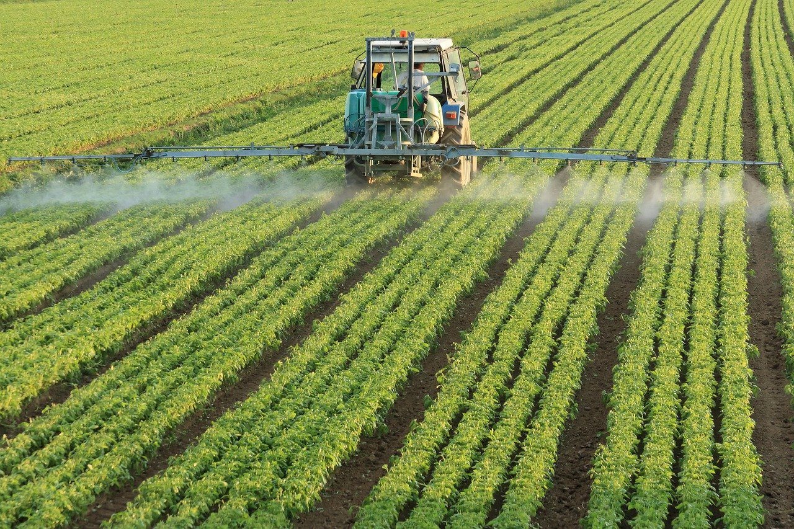
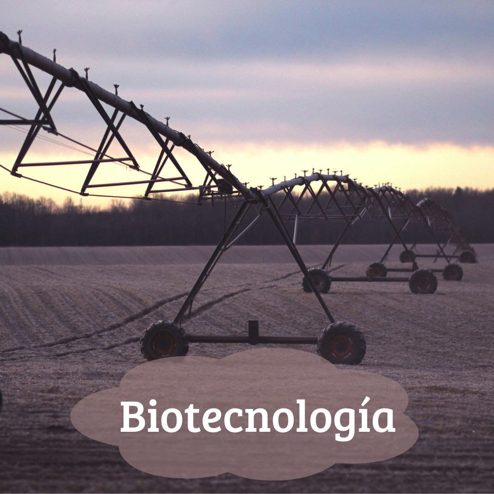
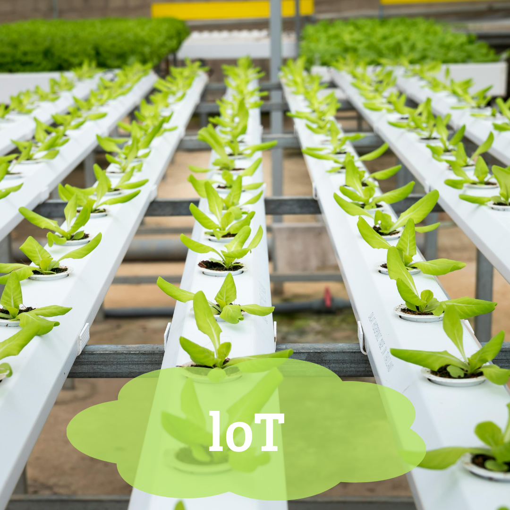

SMART FARMING
La agricultura inteligente, o smart farming, combina la tecnología de vanguardia con la gestión agrícola para maximizar la eficiencia y sostenibilidad.
Utiliza sensores, drones y satélites para monitorizar cultivos en tiempo real, ajustando automáticamente el riego y la fertilización.
Imagina un futuro donde cada planta reciba exactamente lo que necesita, cuando lo necesita, gracias a los datos precisos y al análisis avanzado.
La agricultura inteligente puede aumentar la productividad de los cultivos hasta en un 1.75% mientras reduce
el uso de agua en un 8% y los costos de energía en aproximadamente $17 a $23 por hectárea.
Biotecnología
La biotecnologia utiliza organismos vivos, células y moléculas para desarrollar tecnologías y productos que mejoran la vida humana y el medio ambiente. En el contexto agrícola, se enfoca en la creación de cultivos más resistentes, nutritivos y sostenibles mediante la manipulación genética.
- Cultivos genéticamente modificados (GM): Estos cultivos están diseñados para ser más resistentes a plagas, enfermedades y condiciones climáticas adversas, lo que reduce la necesidad de pesticidas y aumenta los rendimientos
- Resistencia a enfermedades: Mediante la ingeniería genética, se pueden introducir genes que hagan a los cultivos resistentes a virus, bacterias y hongos, garantizando una producción más estable.
- Neurobiotecnología: Avances en interfaces cerebro-computadora que pueden mejorar la vida de personas con discapacidades. Por ejemplo: Tratamientos para enfermedades neurodegenerativas donde se desarrolla terapias avanzadas para enfermedades como el Alzheimer y el Parkinson.


El Internet de las Cosas (IoT) conecta dispositivos físicos, como electrodomésticos, vehículos y sensores, a internet, permitiendo la recopilación y el intercambio de datos. En la agricultura sostenible esto significa sensores en el suelo que monitorizan la humedad, drones que vigilan los cultivos, y sistemas de riego que se activan automáticamente. Estos dispositivos generan datos en tiempo real, facilitando decisiones más precisas y eficientes. Esto optimiza los recursos, mejora la productividad y reduce el impacto ambiental, transformando sectores enteros y llevando la eficiencia a un nuevo nivel. Estas son algunas de las cosas que fascinantes del loT:
- Sensores de suelo: Miden la humedad y los nutrientes, proporcionando datos precisos para el riego y la fertilización.
- Drones agrícolas: Monitorean la salud de los cultivos y detectan plagas con imágenes de alta resolución.
- Collares para ganado: Monitorean la salud y el comportamiento del ganado, optimizando su cuidado y alimentación.
- Tractores autónomos: Guiados por GPS, realizan tareas agrícolas con precisión milimétrica.